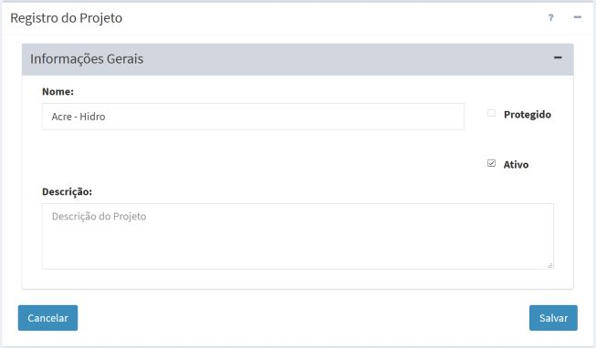

Adicionar Projeto
ADICIONANDO UM PROJETO:
Para adicionar um novo projeto é necessário que um usuário esteja conectado. No menu de opções selecione “ Projetos” para que a lista de projetos disponíveis seja apresentada na área de trabalho. Clique no botão “ + ” para adicionar novo projeto. Utilize o botão “Salvar” para salvar o projeto. Não é permitido nomes de projetos em duplicidade. Botão “Cancelar” volta à tela anterior sem salvar o projeto. A Figura 2.7 mostra a área de trabalho para adicionar novo projeto. Detalhes de cada campo a seguir.
Projetos” para que a lista de projetos disponíveis seja apresentada na área de trabalho. Clique no botão “ + ” para adicionar novo projeto. Utilize o botão “Salvar” para salvar o projeto. Não é permitido nomes de projetos em duplicidade. Botão “Cancelar” volta à tela anterior sem salvar o projeto. A Figura 2.7 mostra a área de trabalho para adicionar novo projeto. Detalhes de cada campo a seguir.

Figura 2.7 – Módulo de Administração: registro de novo Projeto.
Registro de Projeto
- Nome: Defina um nome que será utilizado para identificar o projeto. Nomes iguais não são permitidos. Nomes extensos serão truncados na barra de menus no lugar destinado a apresentar o nome do projeto ativo. O tamanho máximo do nome é de 100 caracteres.
- Protegido: Botão protegido permite que o usuário, com perfil administrador ou não, proteja seu projeto. Apenas o usuário responsável por criar o projeto é quem tem essa opção ativa, podendo habilitar e desabilitar sempre que necessário.
- Ativo: Botão ativo todas as tarefas dos serviços serão executadas por agendamento ou automático, incluindo reprocessamento de dado histórico ou manual. Botão inativo somente tarefas executadas pelo usuário de forma manual ou reprocessamento de dado histórico poderão ser executados.
- Descrição: Defina uma descrição que resume o projeto. O tamanho máximo da descrição é de 250 caracteres.
IMPORTANTE: Projetos que não estiverem protegidos poderão ser alterados ou até removidos por qualquer usuário cadastrado na plataforma. Projetos protegidos podem ser acessados por usuários sem privilégio de administrador apenas para consulta. Projetos protegidos poderão ser desprotegidos ou removidos apenas por usuário administrador.